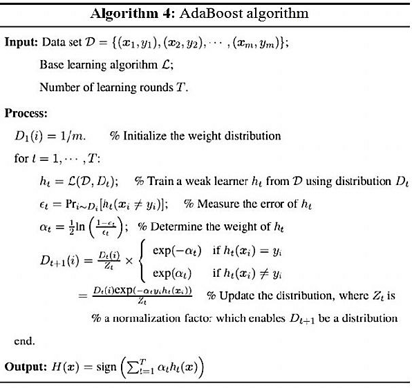
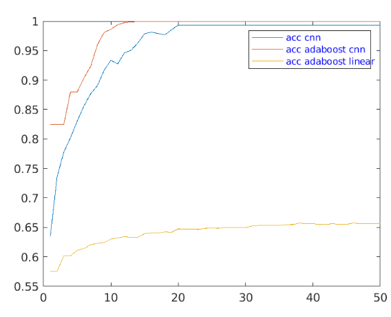
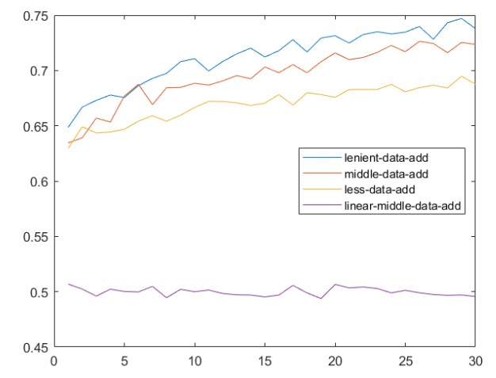

This project was an amalgamation of a lot of different ideas I was having. Initially, the scope for this was
to create and active learning system which could be used for labelling audio data (spectograms). Using cats vs dogs was a
small scale project to see a proof-of-concept. But while i started working on this project, i came across boosting and saw it's clear advantages
as an algorithm for classification and i changed my aim a little bit to use boosting, specifically Adaboost as the learning algorithm
and a shallow 1-layered-NN as the weak learner.
Introduction to Adaboost
Adaboost, which is proposed by schapire and freund in 1996, is a pretty good algorithm which works on the methodology that the prediction
by a bunch of weak learners can be combined to make a strong one. Random forests, use a similar mechanism but in most of their methodology
they use mechanisms such as vote-by-majority to make their decisions. In contrast, in Adaboost each of the learner can be considered to be
learning important information to classify a subset of the data. And when all of these predictors are taken together, and a weighted sum of
predictions is taken for all of them, that prediction can be in many cases be stronger than a single strong classifier.
The Algorithm

At a very high level overview, initially every sample is assigned a probability, and as the rounds of the program progress
classification is done for every data point, which is used to calculate an error value (epsilon)[0/1 error]. This epsilon
is used to calculate an alpha value, which is the weight for that classifier at that round. After this round the probability
assigned to each data point is updated and next round of training is started with these probabilities.
Wait, How do i use active learning with adaboost?
Active learning is a semi supervised learning method where there is very little amount of training data.
We need to use that limited data to make predictions on a large unlabelled pool of data. On every iteration of
active learning we consider only those examples where the confidence for our model's prediction is not good enough.
For a binary classification problem [0/1 classification], we chose those data points which have an output label of close to 0.5.
In our algorithm we implement Query-by-Boosting for active learning on a binary classification task. The points which are chosen to be added to the labelled training set are chosen as the ones at which the weighted voting has the least margin which is defined as the difference between sum of alphas belonging to one class and alphas belonging to the second one. One thing to note about this strategy is that this is more robust as is any active learning strategy which involves a committee than uncertainty sampling because uncertainty sampling assumes that the predictions which are high are correctly labelled and develops a bias to these solutions, where as in boosting since it is using multiple learners in its decision making, a data point is only considered as correctly labelled when most of these learners agree that it is.
Dataset
In our project, we use a Cats v/s Dogs Dataset. It is a binary classification problem. The dataset consisted of 25000 images of Cats and Dogs split into a training and testing set size of 22000 and 3000 respectively. The test images are just used to test The images are of dimensions 64*64*3 signifying a 3 channel RGB image. We then converted these images to grayscale and downscaled them using an Anti-Aliasing Filter. (Helps in preserving the maximum image quality when downsizing).

Experiments
We approached this problem by first developing an understanding about how hard this problem was to solve. We used a simple CNN network shown below :
 This CNN was used as the baseline or an upper bound for accuracy we wanted to achieve. We also developed a weaker version of this CNN for training in AdaBoost. The architecture of that CNN is :
This CNN was used as the baseline or an upper bound for accuracy we wanted to achieve. We also developed a weaker version of this CNN for training in AdaBoost. The architecture of that CNN is :

We further tried to handicap this learner by limiting the number of iterations to train it on. We tested different values of the number of epochs to train this on and we settled at the value of 10 epochs. We also wanted to check whether this problem could be solved by a linear classifier. If it turned out to be true there was no need for using any other learner, so we also trained AdaBoost using a linear classifier as the weak learner.
These different learners were trained on the entire dataset to set a baseline as to how difficult the problem was as solved by different complexities of learners. Our results are shown in the figure below. As shown in this figure, these learners perform very well on our dataset.

With these baselines set up, it was now time to test how our algorithm actually worked in the context of labelling data and doing it efficiently. AdaBoost with CNN as the learner was run for 30 iterations with an aggressive data saving policy (100 data/iteration), intermediate data saving policy(300 data/iteration) and a lenient strategy(500 data/iteration). Even though every operation in all the scripts are vectorized to make them as fast as possible, having 3 levels of iterations, being : running gradient descent on CNN, Running adaboost with multiple CNN’s, running each iteration of active learning having adaboost. I suppose one strategy to make it faster would be an early stopping policy on adaboost where it stops a few iterations after reaching 0 error. The error for different strategies is given by the figure below.

We see that an intermediate data-adding policy while saving data achieves similar accuracy as that of lenient data-adding one. We can also see that active learning policy with linear classifiers performs terribly, however the performance is the same as the one trained on entire data.
One important thing to note here is that the concept of training and testing set does not exist, because we are assuming that every data point that we have is unlabelled and the learner gets access to only a subset of this data. Also, since the learner is making predictions on the entire unlabelled data-set in every iteration of active learning, it cannot be considered as testing data, only a validation set.
A point of concern was about how much data was utilized by the algorithm. This is important because there’s no point in using this method if it is consuming large amounts of data. Table below shows data consumption for different strategies we used.
| Learner |
Acuracy |
Data Points |
% data usage |
| CNN |
0.9932 |
22000 |
1 |
| Active learner with CNN (500 samples added per iteration) |
0.7379 |
15500 |
0.704 |
| Active learner with CNN (300 samples added per iteration) |
0.7236 |
9000 |
0.41 |
| Active learner with CNN (100 samples added per iteration) |
0.6875 |
4000 |
0.18 |
| Active learner with Linear |
0.4956 |
4000 |
0.41 |
| Active learning with random sampling with cnn |
0.5526 |
9000 |
0.41 |
Some Things learnt and future scope
- Using ReLU with sigmoid is a fragile training proces, mostly outputs of sigmoid are saturated.
- Floating-point and 0/0 or Nan errors can be avoided by adding small numbers like 1e-8 to the softmax function.
- Shape Matching is very important while writing backprop especially, if doing mini-batch SGD.
- Use GPU optimization libraries whenever available.. (increase in speed in magnitude of atleast 10X)
- Check your data before feeding it to your learning algorithm.